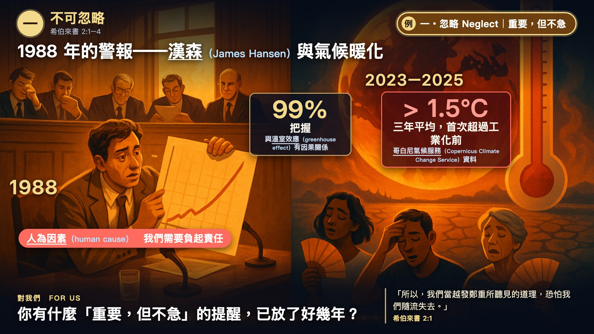

← 世界觀察 World Watch
希伯來書一．不可忽略 (Heb 2:1–4) 的生活例證
氣候暖化警報
Hansen
案例說明 Case description
「九成九確定」——漢森（James Hansen）的國會證詞與氣候暖化（1988）
1988 年，美國氣候學家漢森（James Hansen）在參議院作證：他有 99% 把握，地球已比有儀器紀錄以來任何時候都暖，且與溫室效應（greenhouse effect）有因果關係。三十多年後，哥白尼氣候服務（Copernicus Climate Change Service）的資料顯示，2023–2025 這三年的平均，首次超過工業化前 1.5°C。
警報一直都在，只是每年都有更急的事，於是「先擱著」。氣候變遷是人為因素（human cause）造成的，我們需要負起責任。來 2:1–3：「恐怕我們隨流失去。」你有什麼「重要，但不急」的提醒，已放了好幾年？
資訊圖 Infographic

講道短片 Sermon clip (used during the sermon)
精選短版 Core cut（講道時用）
全球氣溫變暖：由藍轉紅（Global temperature: from blue to red）
長度 Length：8.4 秒 / 8.4 s · 旁白＋中英字幕 narration + bilingual captions
來源 Source：NASA 科學視覺化工作室 (NASA's Scientific Visualization Studio) · 日期 Date：2024年1月12日發布 (released Jan 12, 2024)
出處 Credit：資料：NASA/GSFC GISS (Data: NASA/GSFC GISS) · 授權 Licence：NASA 媒體，須註明出處 (NASA media, credit required)
電影完整片段 Full clip(s) (used in the sermon movie)
完整片段 Full clip 1/1（電影版）
全球溫度異常 1880–2023（Global Temperature Anomalies from 1880 to 2023）
長度 Length：22.0 秒 / 22.0 s · 靜音 silent
來源 Source：NASA 科學視覺化工作室 (NASA's Scientific Visualization Studio) · 日期 Date：2024年1月12日發布 (released Jan 12, 2024)
出處 Credit：資料：NASA/GSFC GISS (Data: NASA/GSFC GISS) · 授權 Licence：NASA 媒體，須註明出處 (NASA media, credit required)
來源與延伸閱讀 Source & further reading
講章段落 Sermon passage：希伯來書 2:1–4 · 完整講道包 Full sermon package：希伯來書講道包